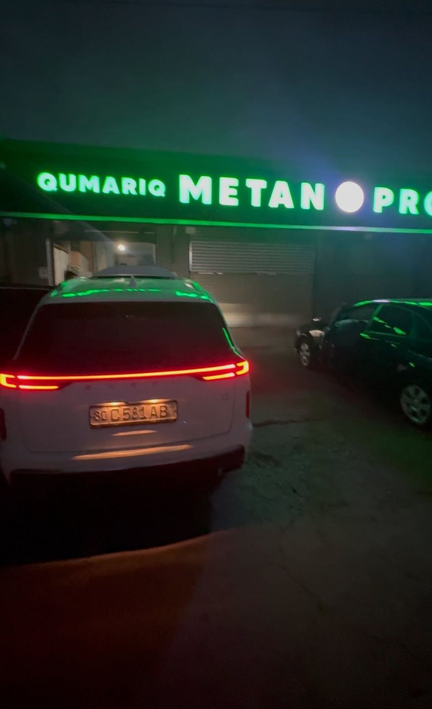

Propan (LPG) ustanovka
Quvvat va tejamkorlik balansi. Ballon bagajda yoki zapaska o‘rniga (toroidal) joylashadi. Tracker, Malibu, Tahoe, xitoy modellari — eng ko‘p so‘raladigan xizmat.
Barcha turdagi avtomobillarga — JDI va MPI, turbo va xitoy modellariga — propan (LPG) va metan (CNG) o‘rnatamiz, kompyuterda sozlaymiz, kafolat beramiz. Naqd va nasiya savdo.

Ishonchli va malakali ustalar. Avtomobilingiz qaysi motorda bo‘lmasin — JDI, MPI yoki turbo — unga mos tizimni tanlab, sifatli zapchastlar bilan o‘rnatamiz.
Quvvat va tejamkorlik balansi. Ballon bagajda yoki zapaska o‘rniga (toroidal) joylashadi. Tracker, Malibu, Tahoe, xitoy modellari — eng ko‘p so‘raladigan xizmat.
Ekonomni birinchi o‘ringa qo‘yganlar uchun. Ballon hajmi avtomobilga qarab tanlanadi — masalan, Kia K5 ga 100 l ballon o‘rnatganmiz.
Dvigatel va gaz tizimini kompyuterda tekshiramiz, xatolarni aniqlab, forsunka va reduktorni aniq sozlaymiz.
Propan reduktor filtrini taxminan har 30–40 ming km da ochib ko‘rish tavsiya etiladi. Tozalash, almashtirish, sozlash.
Propan yoki metanda qandaydir kamchilik bo‘lsa — boshqa joyda o‘rnatilgan bo‘lsa ham — ideal holatga keltirib beramiz.
Malibu 2 2.0 Turbo kabi motorlarga sifatli, ishonchli zapchastlar bilan o‘rnatamiz — 6 oy kafolat.
Obunachilarimiz eng ko‘p so‘raydigan savol. Qisqa javob: ekonomni xohlasangiz — metan, tezlikni xush ko‘rsangiz — propan. To‘liq javob — avtomobilingizga qarab.
Bu — kalkulyator, taklif emas. Narx va sarfni o‘zingiz kiritasiz; biz faqat hisoblab beramiz.
Natija faqat siz kiritgan raqamlarga asoslanadi. Aniq hisob va narx uchun qo‘ng‘iroq qiling.
Instagram sahifamizda test-drayv va obzorlarini ko‘rsatgan modellar. Ro‘yxatda yo‘q bo‘lsa — qo‘ng‘iroq qiling, ko‘rib aytamiz.
Malibu, Malibu 2 2.0 Turbo, Tracker, Onix, Equinox, Trailblazer, Captiva, Monza, Tahoe, Damas, Gentra
K5 (2.5 MPI+GDI), Sportage (2.0 MPI), Carnival
Chery, Exeed, Jetour, BYD, Dongfeng, Aeolus
Volkswagen Jetta, Mercedes, Honda Crider, Skoda, Lexus GX 460
Motor turi — muammo emas. Har bir avtomobilga o‘z forsunka va reduktor to‘plami tanlanadi.
Bagajdagi ballonlar, motor osti, ustalar va mijozlar avtomobillari — hammasi Instagram sahifamizdan.
Birinchi qo‘ng‘iroqdan kafolatgacha — besh bosqich.
Avtomobil va motor turini (JDI, MPI, turbo) aniqlaymiz, holatini kompyuterda ko‘ramiz.
Propan yoki metan, ballon hajmi va joyi, naqd yoki nasiya — siz bilan birga hal qilamiz.
Sifatli zapchastlar, malakali ustalar. Ballon, magistral, reduktor, forsunkalar.
Kompyuterda aniq sozlash va test-drayv — benzin va gazda bir xil yurishi uchun.
Kafolat va keyingi servis: filtr, reduktor tekshiruvi, har qanday savolga javob.
Instagram kommentlarida va qo‘ng‘iroqlarda eng ko‘p so‘raladiganlar.
Ekonomni xohlasangiz — metan. Tezlik va quvvatni xush ko‘rsangiz — propan. Yurish masofangiz, bagaj joyi va motor turiga qarab, diagnostikada aniq tavsiya beramiz.
Propan reduktor filtrini taxminan har 30–40 ming km da ochib ko‘rish yaxshi. Shunda sarf oshmaydi va mashina gazda silliq yuradi.
Ha. Masalan, Malibu 2 2.0 Turbo ga sifatli, ishonchli zapchastlar bilan o‘rnatamiz va 6 oy kafolat beramiz. Tanlovda adashmang — zapchast sifati turbo uchun hal qiluvchi.
Ha — Chery, Exeed, Jetour, BYD, Dongfeng, Aeolus va boshqalar. Premium xitoy modellarida propan test-drayvlarini Instagram sahifamizda ko‘rishingiz mumkin.
Ha, naqd va nasiya savdo mavjud. Shartlar avtomobil va tizimga qarab farq qiladi — qo‘ng‘iroq qiling, aniq aytamiz.
Sifatli ballon va to‘g‘ri gaz quyish — xavfsizlikning asosi. Biz ballonni o‘rnatishdan oldin tekshiramiz va to‘g‘ri gaz quyish bo‘yicha tavsiya beramiz.
Ha. Propan yoki metanda qandaydir kamchilik bo‘lsa, diagnostika qilib, ideal holatga keltirib beramiz.
Bizda 2 ta filial bor. Manzil, ish vaqti va yo‘nalish — Telegram kanalimizda, yoki telefon qiling, tushuntirib beramiz.
Model, motor va yurish masofangizni ayting: propanmi, metanmi, qaysi ballon va qanday shartlar — hammasini bitta suhbatda hal qilamiz.
1-chi va 2-chi ustaxona manzillari va ish vaqti — Telegram kanalda.
Manzillarni ko‘rish